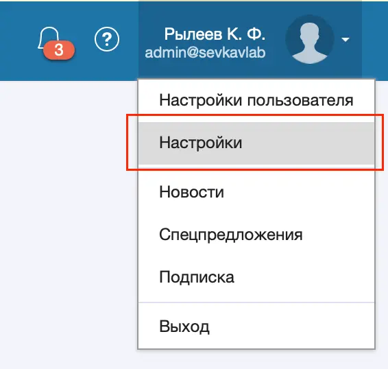
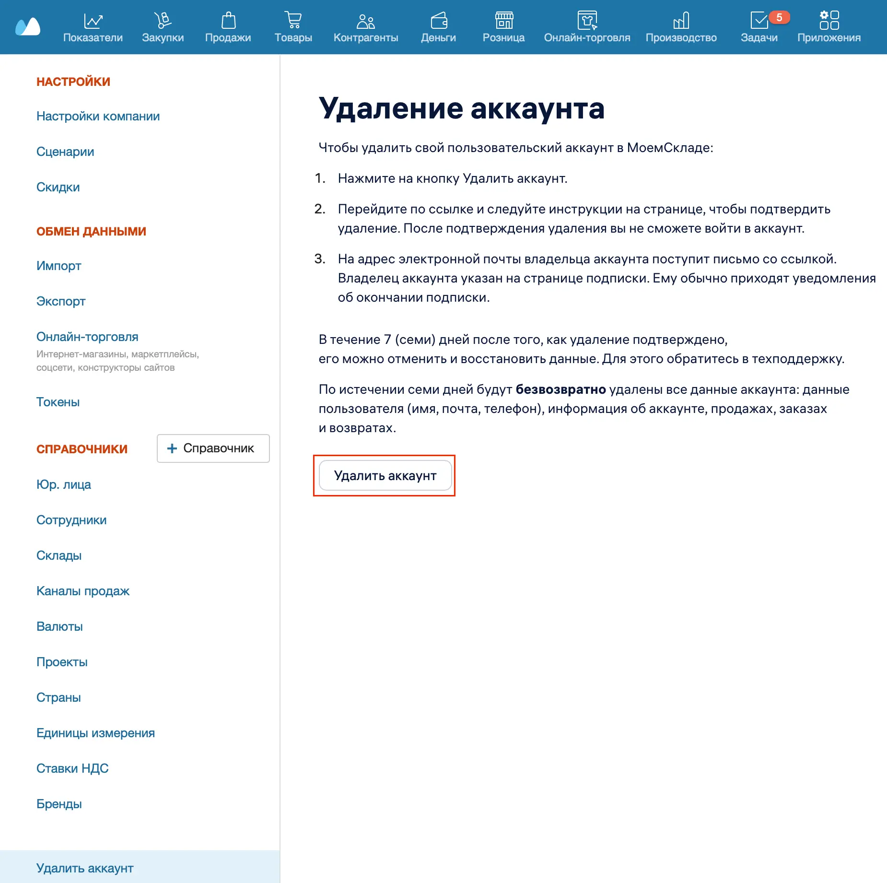

Удаление аккаунта доступно только для владельца этого аккаунта.
Чтобы удалить свой пользовательский аккаунт в МоемСкладе:
- Нажмите на иконку пользователя и выберите Настройки.

- В списке слева выберите Удалить аккаунт.
- В разделе Удаление аккаунта нажмите на кнопку Удалить аккаунт.

- Перейдите по ссылке и следуйте инструкции на странице, чтобы подтвердить удаление. После подтверждения удаления вы не сможете войти в аккаунт.
- На адрес электронной почты владельца аккаунта поступит письмо со ссылкой. Владелец аккаунта указан на странице подписки. Ему обычно приходят уведомления об окончании подписки.
- В течение семи дней после того, как удаление подтверждено, его можно отменить и восстановить данные. Для этого обратитесь в техподдержку.
Через семь дней будут безвозвратно удалены все данные аккаунта: данные пользователя (имя, почта, телефон), информация об аккаунте, продажах, заказах и возвратах.